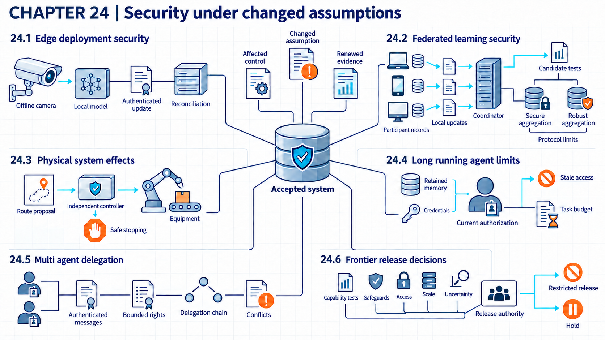
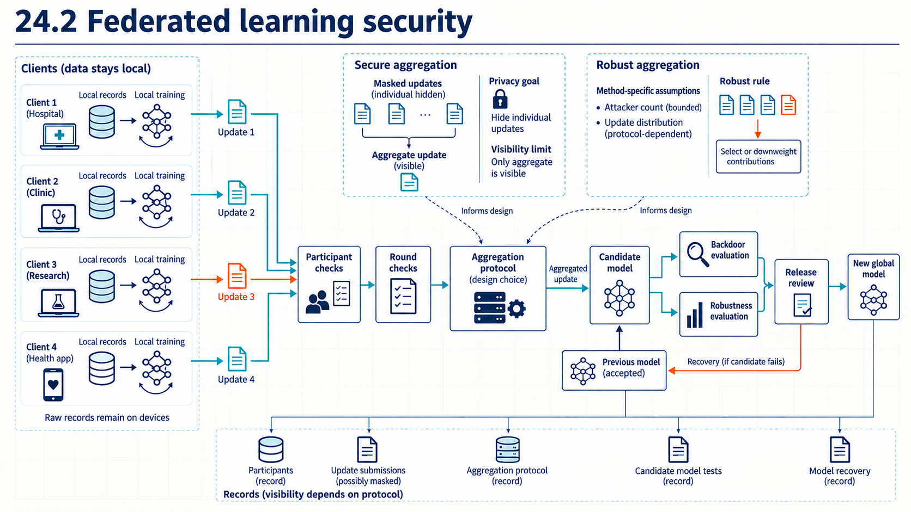

24 Reassessing security after technology changes
Changes in physical access, participant trust, persistence, delegated authority, or systemic uncertainty reopen earlier security assumptions.
Earlier controls depend on where a system runs, who can change it, how long its permissions last, and which behavior has been tested. A change in one of those conditions can weaken the evidence for a control even if the control still runs. For example, a signature check depends on a protected signing key and trustworthy verification code on the device. An initial permission check does not establish that an agent still has authority eight hours later.
Suppose the organization from the earlier cases extends its systems in six ways. It runs models on cameras or other local devices, shares training across branches, and lets model outputs influence physical equipment. It also gives software agents tasks that last for hours, divides work among agents, and adopts a much more capable model. The design examples are invented and each changes one main condition. The research and vendor reports used to motivate them are identified separately. For each one, the useful record is the earlier assumption, the changed condition, the affected control, the new possible failure, and the evidence that must be collected again. The final comparison uses these fields for every change.

24.1 Physical attacks on edge devices
A centrally operated application can rely on a stable network and controlled facilities. It can also send records to consolidated logs. An edge deployment runs a model or AI application on or near the device that supplies data or receives action. That device may sit where an attacker can touch it.
NIST’s Internet of Things baseline1 covers protection of stored and transmitted data, limits on local and network interfaces, authenticated software updates, rollback, and reporting of device security state. A device security state reports if security functions operate as expected. The NIST baseline2 permits local or remote updates and requires verification and authentication. It also includes authorized rollback. It does not establish protection of AI weights or select a cryptographic design for a specific device.
The threat model now includes physical access, extracted secrets, intermittent links, delayed revocation, limited storage, and lost telemetry. The example inspection camera supports offline operation, which continues without a remote dependency. It may keep running inference while disconnected. It accepts only a signed model version and records enough state to reconcile after reconnection. A rollback also has to match the compatible software and data state.
Control review. The device boot and update service checks software and model identity, signature, compatible state, local authorization, and the allowed duration and actions while disconnected. It runs, holds, or restores the accepted package and records the decision for later reconciliation. Tests report rejected unauthorized packages over all attempted unauthorized packages, bounded offline actions over all offline actions, and time to reconcile after reconnection. Secure storage, update capacity, and retained logs add hardware and operating cost. Extracted signing keys, damaged sensors, or full device compromise can defeat a control whose checks cover only specified physical attacks. Recovery enters the specified safe mode and restores a verified package. It rotates keys and reconciles records.
Edge operation changes location and connectivity. Federated learning changes who computes training updates and what the coordinator can inspect. Both changes reopen parts of the system record from Chapter 1 (Mapping the AI system), but neither requires the other.
24.2 Poisoned federated updates
Several branches may want to improve one model while keeping their training records in local stores. Federated learning lets each participant train a local copy and send model parameters or their changes to a coordinator. The coordinator combines these contributions into the next shared model. This is training: local predictions are compared with target values and parameters change. Later evaluation tests a candidate with fixed parameters before release. Keeping raw records local does not by itself keep submitted updates private or make them trustworthy.
In the branch example, each branch operates a training participant, also called a client. The organization operates the coordinator, also called the server. It controls participant admission and the shared model version but cannot assume that an admitted branch follows the training instructions. Clients also need a privacy model for what the server and colluding branches can learn.
One training round starts when the server selects clients and sends the same current model to each. Each client predicts on local records, measures loss against their targets, changes its local parameters, and returns its contribution. The server combines those contributions and uses the resulting model as the starting point for the next round. After the chosen training rounds, the organization’s release process evaluates the candidate without changing its parameters and accepts or rejects it. Local records remain at the branches throughout this example.
McMahan et al.3 introduce Federated Averaging (FedAvg), a training procedure that repeats local training and server averaging. Its averaging step is an aggregation rule, the calculation that turns client contributions into one result. Replacing that calculation changes the procedure. A rule intended to tolerate malicious values and a protocol intended to conceal individual values solve different problems, so their conditions need separate checks.
Let \(w\) be a vector of \(d\) model parameters, the adjustable numbers used to make predictions. All clients use the same model structure and parameter ordering, so each coordinate means the same parameter in every returned vector. Client \(k\) has \(n_k\) training records, and \(N=\sum_k n_k\) is the total number of records. Its mean loss \(F_k(w)\) measures prediction error on those records. FedAvg uses the overall objective
\[F(w)=\sum_k (n_k/N)F_k(w).\]
The weights \(n_k/N\) are dimensionless and sum to one. They give each record equal weight, so a client with more records contributes more to the objective. Equal client weighting gives each client equal influence, a different choice when record counts differ. Neither scheme verifies a reported count.
At round \(t\), the server sends \(w_t\) to selected clients. Each client performs \(E\) epochs, meaning \(E\) passes through its records. It divides those records into batches \(b\) of size \(B\) and uses the local learning rate \(\eta_{\rm local}\) in the update
\[w \leftarrow w-\eta_{\rm local}\nabla\ell(w,b).\]
Here \(\ell(w,b)\) is the mean batch loss. Its gradient \(\nabla\ell(w,b)\) contains the local rate of loss change with respect to each parameter. The minus sign moves the parameters against that gradient, with step size set by \(\eta_{\rm local}\). The update stays in the same \(d\)-dimensional parameter space. If \(B\) divides \(n_k\), the client takes \(E n_k/B\) steps. Several local steps generally differ from one step over all clients’ records because later local gradients use already changed parameters.
The returned vector \(w_{t+1}^k\) is client \(k\)’s locally trained model. With full participation, the server forms \(w_{t+1}=\sum_k(n_k/N)w_{t+1}^k\). For a selected set \(S_t\), the example here uses normalized weights \(a_{k,t}=n_k/\sum_{j\in S_t}n_j\) and \(w_{t+1}=\sum_{k\in S_t}a_{k,t}w_{t+1}^k\). The index \(j\) ranges over the selected clients. This explicitly states how absent clients are handled rather than treating the paper’s printed algorithm as an unambiguous rule for that case.
A client can instead send its parameter delta, the change \(\Delta_{k,t}=w_{t+1}^k-w_t\) from the common starting model. Adding that delta to \(w_t\) recovers the returned model. Because the selected weights sum to one, averaging returned models is equivalent to \(w_{t+1}=w_t+\sum_{k\in S_t}a_{k,t}\Delta_{k,t}\). The word “update” must therefore identify which object is sent. A model contains parameter values, a delta contains changes to those values, and a gradient contains loss derivatives. For one local gradient step, \(\Delta_{k,t}=-\eta_{\rm local}g_{k,t}\), where \(g_{k,t}\) is the client’s gradient at \(w_t\). After several steps, the delta combines gradients evaluated at different local parameter values.
Example
Weighted-update example. Suppose two selected clients have 20 and 80 records and return values 0.8 and 1.2 for the same parameter, starting from 1.0. Their deltas are \(-0.2\) and \(0.2\). Averaging the returned values gives \(0.2\times0.8+0.8\times1.2=1.12\). Adding the weighted delta gives the same result: \(1.0+0.2(-0.2)+0.8(0.2)=1.12\). Equal client weighting would give 1.0. The next round starts from the combined value. These invented parameter values show the weighting choice, not evidence that either result improves model quality.
The coordinator may need to combine updates without seeing each participant’s values. Secure aggregation reveals an allowed aggregate while hiding individual contributions beyond what the aggregate and colluding parties already reveal. That protection changes which security checks the coordinator can perform.
The protocol of Bonawitz et al.4 sums vectors of integers modulo a fixed integer. Fractional parameter deltas therefore need an encoding before masking and a decoding after summation. The following small calculation explains that bridge; it is not a cryptographic parameter choice.
Example
From deltas to integers and back. Suppose the two clients above first multiply their deltas by their agreed weights. Their contributions are \(0.2(-0.2)=-0.04\) and \(0.8(0.2)=0.16\). Choose a scale of 100, round each scaled contribution to the nearest integer, and use modulus 101. The signed integers are \(-4\) and \(16\); their transmitted residues before masking are \(97\) and \(16\), since \(-4\) and \(97\) differ by 101. After the masks are removed, the modular sum is \((97+16)\bmod101=12\). Decode residues 0 through 50 as nonnegative integers and 51 through 100 by subtracting 101. Dividing the decoded sum by 100 gives 0.12. Adding it to the starting parameter 1.0 gives 1.12, matching the earlier weighted average.
This decoding is unambiguous only if the true sum of the encoded signed contributions lies between \(-50\) and \(50\). Otherwise a wrapped sum could decode as a different value. With nearest-integer rounding, each honest contribution has rounding error at most \(0.005\) in the original parameter units, so two contributions have total error at most \(0.01\); these particular values round exactly. A real design chooses its scale and modulus from enforced contribution bounds and the number of included clients. Those bounds are assumptions unless another mechanism checks them. Weighting happens before encoding here and is not applied again after decoding. If dropout changes the included clients, the system also needs an explicit rule for the resulting weights; secure summation does not normalize them automatically.
The protocol’s masking and recovery work as follows:
- Clients establish keys and distribute encrypted shares of their personal mask seeds and pairwise-mask private keys through the server to peers. Threshold secret sharing lets any \(t\) shares recover a secret while fewer shares conceal it.
- Each pair of clients derives a secret seed and matching masks, added by one client and subtracted by the other. Each client also adds a personal mask and sends the masked vector to the server.
- The server identifies received contributions. Pairwise masks between included clients cancel in their sum. Continuing peers release shares to recover personal masks of included clients, including clients that sent a vector but then disconnected, and pairwise-mask keys of clients whose vectors are absent. Removing these masks reveals the sum.
Reconstruction recovers mask material. Honest peers never release both secret types for one client. The active variant adds signed agreement on the inclusion list to prevent contradictory recovery requests.
Bonawitz et al.5 prove input privacy under two threat models in a synchronous protocol with private authenticated client-server channels and the specified secure cryptographic components. Here \(n\) counts clients in the protocol, \(c\) counts clients colluding with the server, and \(t\) is the share-reconstruction threshold just described. This \(t\) is a protocol threshold, not the training-round index used above. Honest-but-curious parties follow the protocol but try to learn extra information, and the privacy condition is \(c<t\). Active attackers may deviate from the protocol, and the condition is \(2t>n+c\). The active result limits disclosure to a sum containing at least \(t-c\) honest inputs, alongside the adversary’s own information. Its proof also assumes authenticated setup, signatures, a consistency check, and the paper’s random-oracle and Two Oracle Diffie-Hellman assumptions. These last two concern idealized hash behavior and the difficulty of the underlying cryptographic problem, not ordinary averaging.
Completion with honest dropouts requires at least \(t\) continuing clients, allowing up to \(n-t\) nonresponders under that model. For example, \(n=10\), \(c=2\), and \(t=7\) satisfy both displayed privacy inequalities and allow three nonresponders under the stated completion condition. These counts alone do not establish a secure implementation: the other assumptions must hold. Too few continuing clients cause an abort.
The protocol does not verify that an update came from real training. Its active proof establishes privacy, not correctness or availability of submitted values. A participant can still disrupt the result with a value outside the allowed range. Section 7 of the paper evaluates the honest-but-curious version and simulated dropouts, not the active variant. Secure aggregation also does not provide differential privacy for the sum or released model, and it does not detect a hidden malicious update. For example, if the adversary knows every contribution except one, subtracting the known values from the sum reveals the remaining contribution.
If the coordinator can see individual updates, it can try to stop one bad update from dragging the combined model. Without an enforced bound on each contribution, one submitted value can move the plain average arbitrarily far. Byzantine robust aggregation uses a rule designed to tolerate a bounded number of arbitrary participant updates. Three such rules show the idea.
For the branch comparison below, the submitted objects are complete delta vectors. The server applies a chosen rule to those deltas and adds its output to the common starting model. This is an engineering comparison of replacement aggregation steps. The cited robustness results concern gradients computed at one shared model, where the server instead subtracts the aggregate gradient multiplied by a learning rate. Changing the submitted object does not transfer a theorem to the new training procedure.
Blanchard et al.6 propose Krum, an aggregation rule that selects the submitted vector with the smallest sum of squared distances to its nearby submissions. For \(n\) submitted vectors of \(d\) coordinates and an assumed bound \(f\) on malicious submissions, it computes a score for each vector \(v_i\): \(s(i)=\sum_{j \in N_i} \|v_i - v_j\|_2^2\). Here \(i\) and \(j\) index submissions, \(N_i\) contains the indices of the \(n-f-2\) closest other vectors, and \(\|v_i-v_j\|_2^2\) is their squared Euclidean distance, the sum of squared coordinate differences. Krum returns \(v_{\arg\min_i s(i)}\), the vector with the smallest score. So it returns one submitted vector rather than an average. A distant isolated update has a large score, but proximity does not establish that the selected update is honest. The resilience result requires \(2f+2<n\) together with assumptions about honest gradient estimates and their variation. Those assumptions are not guaranteed for branches with different data or several local training steps. The Conditions for robust aggregation distinguishes the resilience conditions from further convergence assumptions.
Other rules work one coordinate at a time (Yin et al.7). A coordinate is one position in the update vector. Coordinate median takes the median of the submitted values at each position. Coordinate trimmed mean removes a fraction \(\beta\) from each end of the sorted values at that position and averages the rest, with \(0\leq\beta<1/2\). An implementation must specify how it rounds the number of removed values. These rules may combine coordinates from different clients into a vector that no client submitted.
Example
Worked example: one outlier in a one-parameter model. Suppose the entire toy model has dimension \(d=1\). The operating mode is training, at the aggregation step of one round. Five branches submit deltas 0.10, 0.12, 0.09, 0.11, and 2.50. Each scalar is a complete submitted vector, not one observed coordinate of a larger vector. The last value is the outlier. The question is how far that one value moves the combined result under each rule. For a model with more parameters, Krum uses all coordinates together to select neighbors and a complete vector.
- Plain mean: \((0.10+0.12+0.09+0.11+2.50)/5 = 2.92/5 = 0.584\).
- Median: sorted, the values are 0.09, 0.10, 0.11, 0.12, 2.50. The middle value is 0.11.
- 20% trimmed mean: with five values, \(\beta = 0.2\) removes one value from each end, 0.09 and 2.50. The rest average to \((0.10+0.11+0.12)/3 = 0.33/3 = 0.11\).
With Krum, \(n=5\) and \(f=1\), so each score uses two neighbors. Both 0.10 and 0.11 have score \(0.01^2+0.01^2=0.0002\). The score for 2.50 is \(2.38^2+2.39^2=11.3765\). Numbering the clients in the listed order and breaking ties by the smallest client number selects 0.10. If the starting parameter is 1.0, the server adds that delta to get 1.10 for the next round. This checks the calculation, not the assumptions needed for a learning guarantee.
For comparison, the four ordinary values alone average \(0.42/4 = 0.105\). The outlier pulls the plain mean more than five times higher, to 0.584. The median and the trimmed mean both stay at 0.11, close to the ordinary values.
Conclusion. In this one-coordinate example, the robust rules prevent the large outlier from dominating the selected value. The example does not show that the combined model is free of a backdoor. A malicious update can be built to look ordinary, with values inside the normal range, so a rule based on distance or rank may fail to distinguish it. More bad updates than the rule assumes can also move the result. The rules discard some honest information too, which can lower learning quality. They are candidates to test against an expected attack. The conditions under which each rule has a proven guarantee are set out in Conditions for robust aggregation.
A malicious participant can also aim to change the whole combined model. A model replacement attack scales its submitted change so that averaging moves the shared model toward an attacker-chosen target. Here \(K\) counts all participants, \(m\) counts those selected for the round, \(G_t\) is the current shared parameter vector, \(X\) is the attacker’s target model, and \(L_i^{t+1}\) is participant \(i\)’s returned model. All model vectors have the same \(d\) coordinates. \(K\) counts participants, unlike the record count \(N\) above.
Bagdasaryan et al.8 use a global learning rate \(\eta\) in the rule
\[G_{t+1}=G_t+(\eta/K)\sum_{i=1}^{m}(L_i^{t+1}-G_t).\]
When \(\eta=K/m\), expanding the sum cancels the old \(G_t\) term and leaves the average of the \(m\) returned models. Suppose participant \(m\) is the attacker. Setting \(G_{t+1}=X\) and solving for that participant’s returned vector gives
\[\tilde L_m^{t+1}=G_t+(K/\eta)(X-G_t)-\sum_{i\ne m}(L_i^{t+1}-G_t).\]
The tilde marks the attacker’s submission. The sum over \(i\ne m\) includes the other selected participants. The attacker usually cannot observe that sum, so the approximate strategy omits it and submits
\[\tilde L_m^{t+1}=G_t+(K/\eta)(X-G_t).\]
Substituting this chosen submission into the server rule gives the exact result
\[G_{t+1}=X+(\eta/K)\sum_{i\ne m}(L_i^{t+1}-G_t).\]
Scaling acts on \(X-G_t\), not on \(X\) alone. Replacement is approximate unless the benign residual is small. Near convergence that residual may partly cancel, but this is a setting dependent approximation, not an identity. Clipping, changed weights, nonlinear aggregation, rejection, or missing knowledge change the multiplier. For a weighted rule, let \(\Delta_i=L_i^{t+1}-G_t\) be the submitted change, \(a_i\) its dimensionless weight, and \(\eta_s\) the server learning rate. Then \(G_{t+1}=G_t+\eta_s\sum_i a_i\Delta_i\). Ignoring the other clients’ contribution gives \(\Delta_m\approx(X-G_t)/(\eta_s a_m)\), provided \(\eta_s a_m\) is nonzero.
Example
Replacement calculation. Suppose \(K=100\), \(m=10\), and \(\eta=10\), so selected models receive equal weight. On one coordinate, let \(G_t=1.0\) and \(X=1.2\). The attacker submits \(1.0+(100/10)(1.2-1.0)=3.0\). If the other nine changes sum to zero, the server reaches 1.2. If they sum to 0.1, it reaches \(1.2+(10/100)0.1=1.21\). The invented calculation exposes residual error. It does not demonstrate a functioning backdoor.
Bagdasaryan et al. evaluate this in two tasks. CIFAR-10 uses 100 total clients, 10 per round, a lightweight ResNet18 image classifier, and two local epochs. Reddit word prediction uses 83,293 retained participants, 100 per round, a two-layer long short-term memory (LSTM) model for predicting the next word, and two local epochs. Single shot selection of one malicious participant can give a backdoor. Persistence varies by trigger and task. Those results apply to the tested models, data, aggregation, and attacker control of data and updates, not to every deployment. Secure aggregation is not needed for the algebra. It only removes server inspection of the individual update.
Example
Changed-assumption trace. The base training design assumes one controlled data store and one training operator. The example federated design changes the input path. Ten branches start from the same model version \(G_t\) and compute local updates. The exercise observer sees that nine branches submit updates near the prior direction while branch B7 submits a much larger change. Two coordinator views are distinct. If the coordinator receives individual updates, it can record participant identity, update norm, and pairwise distances. It can then apply a stated robust rule before forming \(G_{t+1}\). If it receives only a secure sum, it sees the aggregate and participation record. B7’s individual norm and pairwise distances are not available to that coordinator, so ordinary Krum or coordinate checks cannot run on the sum alone. A hidden contribution bound or private robust aggregation would need a separate specified design and proof. In either view the observed result is a candidate model that needs normal task and backdoor evaluation before release. The ten branch values and the single large change are exercise assumptions.
The trace also fixes what the coordinator can enforce. In both views it checks participant eligibility, round identity, submitted format, and candidate model tests before release. Only the visible view lets it check allowed contribution per participant and run the robust rule. With a secure sum, those per-update checks need an extra specified enforcement method. A compromised client can ignore a local clipping instruction. The coordinator either accepts the round or rejects the candidate, and a rejection restores the prior model. Measures report accepted participants over all scheduled participants, rejected rounds over all rounds, and security test failures over all candidate cases. In the visible view, an extra measure is the share of injected large-norm updates that the rule caught. A failed candidate test alone does not identify the responsible branch.
Secure aggregation and repeated evaluation add communication and compute cost. Colluding participants, hidden malicious updates, or a test blind spot can defeat the design. Input privacy, robust optimization, and backdoor integrity do not imply each other. A private sum can still include a malicious value, and a low loss model can still contain a targeted backdoor. Recovery discards the candidate and revokes identified participants where evidence supports it. Training resumes from the accepted model. A passed aggregate and test set do not prove that individual updates were benign or private outside the protocol assumptions. Distributed computation changes which parties can see or change training. The figure brings these distinct checks together. Participant eligibility, private aggregation, resistance to malicious updates, and candidate testing answer different questions.

The two aggregation paths in the figure have different visibility. A secure sum alone does not let the coordinator inspect each update. Physical systems add a different question: what may happen when software acts on a model output?
24.3 Unsafe physical actions
McAfee researchers9 showed in February 2020 that a strip of tape on a 35 mph sign could make a camera system read it as 85 mph. Two test cars then accelerated, as told in Chapter 4 (Input attacks and response tampering). The test covered two 2016 cars, and no road incident was reported. The model misread the sign, but the speed change came from the software that acted on that reading.
A model output becomes a safety concern when software can move equipment or alter a process. A cyber-physical system joins computing, communication, people, and physical components. Within it, an actuator changes the physical process.
NIST10 describes operational technology as systems that detect or cause direct changes in physical devices, processes, and events. Such systems have distinct safety, reliability, availability, and performance requirements. The NIST guidance11 says safety-critical systems need detection of unsafe conditions, movement toward safe conditions, and often human oversight. It also discusses fail-to-a-known-state design and independent non-digital safeguards. These are general design considerations. Evidence for one architecture still requires system-specific tests.
In the example warehouse, an AI model may propose a route. A separate controller enforces speed, zone, load, and emergency-stop limits without depending on the model’s explanation. It checks current sensor state, the route command, and communication status. It allows a bounded motion or changes the command. If the state is unsafe, it moves the equipment to a safe state: a specified physical condition selected to limit harm after a fault or loss of control.
Tests include sensor failure, stale state, lost communication, and unsafe commands. They report blocked unsafe commands over all injected unsafe commands, mistaken stops over all allowed scenarios, and time to safe state. Independent hardware, validation, and downtime add cost. Shared sensors, common power loss, or a failed actuator can bypass the intended separation. Recovery isolates the equipment and uses the physical emergency path. Motion resumes only after a verified reset. These tests are part of a safety case, not proof of complete physical safety.
Physical supervision makes time and authority limits visible. Agents that keep state across long work raise the same limits in software.
24.4 Stale permissions in long-running agents
A short request ends when the response returns. A long-running agent retains state or authority across multiple tasks or an extended period. Over that period, a permission granted at the start can become a stale permission, one that no longer matches the current task, role, or risk.
OWASP’s agentic risk taxonomy12 separates identity and privilege abuse, memory and context poisoning, tool misuse, and cascading failures. Zero trust architecture bases access decisions on the subject, resource, and current context rather than network location alone (NIST Zero Trust Architecture13). The taxonomy does not measure prevalence. Zero trust guidance does not set goal refresh or memory retention periods for AI agents.
The control loop binds credentials, memory, remaining budget, and allowed actions to a current task state. Time expiry, role change, unexpected resource growth, or a new action class can trigger reauthorization, a new decision that confirms or changes continued access or action authority. No peer-reviewed or standards-based evaluation cited here establishes the right intervals, memory expiration, or resource caps. Those values remain hypotheses for system-specific testing.
Example
Changed-assumption trace. For this comparison, suppose the earlier assistant handled one request with credentials that expired after the response. The example long-running version works for eight hours, retains a task queue, and can create support tickets. At hour four, the employee changes role and loses access to customer C44. The agent’s next step attempts to reuse the earlier customer context. The authorization service checks the current employee role and rejects customer access. The agent runner then removes the queued action, excludes retained C44 text from subsequent model inputs, and records the stale context reference. The observed result is a denied action rather than a carried-over permission. The four-hour point and eight-hour duration are test values. They do not establish suitable intervals for another system.
Beyond the role, the authorization service checks task state, retained context, credential age, action class, and remaining resource budget before each consequential step. It permits, changes, or stops the step and records discarded state. Tests report denied stale actions over all stale-action attempts, orphaned tasks over all interrupted tasks, and cleanup time. Reauthorization and state review add latency and storage work. An alternate tool path, shared token, or hidden memory store can bypass the loop. Recovery revokes credentials and clears or quarantines retained state. Work restarts from saved task state only after the runner checks that its retained data and permissions are still allowed.
Delegation across multiple agents adds message and conflict problems to the same state-management challenge.
24.5 Delegation chains and AI worms
Cohen et al.14 demonstrated Morris II in laboratory email applications in March 2024. The model copied adversarial instructions into its output, a replication step. Application delivery and storage then carried that content to another assistant, a propagation step. Their retrieval-based variant waited for a later email to retrieve the stored hostile correspondence. A separate variant used model output to steer application forwarding. These are demonstrations against applications built for the research, not a reported incident in deployed email services.
Example
Two-assistant trace. Suppose assistants A and B may exchange ordinary email replies. A stores an attacker’s email containing instructions to reproduce those instructions alongside unwanted content. Later, B sends A a legitimate question. A retrieves the stored email as context. If the attack succeeds, A’s model includes the reproduction instructions in its answer. A’s application sends that answer through its permitted reply function. B stores it and may retrieve it for a later model call, where replication can happen again. Copying an ordinary quotation alone would not establish a worm: the copied instructions must remain capable of inducing replication and the unwanted behavior at the next assistant.
For this example, an outbound review gate holds generated replies before delivery. If it holds A’s contaminated reply, the copy remains at A and that delivery to B stops. A’s stored email still needs removal or quarantine. Release by a mistaken reviewer, another sending path, or ingestion of an earlier copy can continue the spread. This proposed control and its limits are design reasoning, not measured Morris II defense results.
A multi-agent design divides work among several software actors. They talk through an inter-agent message, which encodes information, a request, or an instruction sent between agents. A delegation chain records how one actor grants another limited authority.
OWASP’s agentic taxonomy15 includes insecure inter-agent communication and cascading failures alongside identity, privilege, and memory risks. CSF 2.016 calls for service identities and credentials to be managed and for permissions and authorizations to be defined, enforced, reviewed, and separated by duty. These sources do not establish a standard multi-agent architecture or resolve conflicting goals and message meaning.
The system needs authenticated senders and typed messages. Bounded delegation limits what each agent can pass on. Conflict rules decide what happens under conflicting authority, which exists when two instructions or permissions cannot both be followed safely. Separate action authorization limits the resulting operations. Records connect a final action to its delegation chain. The example research agent can ask a retrieval agent for documents but cannot transfer its own write permission. No primary specification or evaluated system cited here covers authentication, delegation, conflict, and audit assumptions together.
Enforcement happens in two places. The message gateway checks sender identity, message type, task identifier, delegated rights, expiry, and conflict state. The action service then checks the final operation against the complete delegation chain, and permits, rejects, or escalates the request. Tests report rejected forged messages over all forged cases and blocked excess rights over all delegation attempts. Those tests need a separate content test: valid identities and permitted replies can still carry replicated hostile instructions.
A matched test uses two isolated assistants, valid sender credentials, an allowed reply type, and a harmless test message designed to reproduce an identifiable instruction and test marker. It records four separate events: inclusion in A’s model context, reproduction in A’s output, delivery and storage at B, and renewed reproduction when B consumes the stored text. Running the same cases with and without the outbound review gate locates where the path stops. Measures include held contaminated replies over all generated contaminated replies, contamination reaching B over all test attempts, and held clean replies over all clean controls. An unchanged marker copied into storage is evidence of delivery, while reproduction of the instruction during B’s later inference tests the next replication step. These are proposed tests, with no success rate assumed.
Signing, policy checks, review, and trace storage add latency and operating cost. Shared credentials, colluding agents, or ambiguous message meaning can defeat parts of the scheme. These checks do not prove that the agents share a correct goal. Recovery stops affected delivery paths and quarantines copied messages and retrieval records at each reached assistant. It revokes compromised or excessive credentials where needed, restores permitted task state, and replays recorded events for analysis. Retrying an external action requires current authorization and a duplicate-action check.
This spread-out uncertainty offers a contrast with frontier release decisions, where one model change can shift many capabilities at once.
24.6 Evaluating frontier model capabilities
Anthropic17 reported in April 2026 that Claude Mythos Preview produced working exploits in 181 attempts on a Firefox 147 JavaScript-engine benchmark, compared with two for Opus 4.6 in the earlier experiment, as discussed in Chapter 17 (AI-assisted attacks). The source describes JavaScript-shell exploits against vulnerabilities patched in Firefox 148. These are vendor-reported benchmark outcomes, not 181 distinct newly discovered Firefox vulnerabilities or evidence of customer compromise. Independent replication was not established in this review. The comparison motivates renewed testing when capabilities change, while deployment risk still depends on access and operating conditions.
Past test results become weaker evidence when a model’s capabilities, access, or deployment scale move beyond the evaluated range. In the Seoul commitments18, frontier AI refers to highly capable general-purpose models or systems near the most advanced capability level. In the original 2024 EU AI Act definition19, systemic risk concerns harm associated with highly capable general-purpose models that can spread at scale through their many uses. Its scope includes public health, safety, security, fundamental rights, and society. The legal classification depends on the applicable Act, not simply on a large model or an isolated failure.
The 2024 Seoul commitments20 ask participating organizations to assess severe risks across the lifecycle and define assessable thresholds. They also ask them to specify mitigations and to avoid development or deployment when residual risk cannot be kept below those thresholds. These voluntary commitments have no legal force, and publication does not show that each organization carried them out. The European Commission21 states that the Safety and Security chapter of the General-Purpose AI Code of Practice applies only to certain providers. These are providers of general-purpose AI models with systemic risk under Article 55. The code is voluntary, while binding duties come from the AI Act.
A release record connects capability evidence, attacker access, misuse tests, safeguard results, deployment scale, and uncertainty to a release threshold. Public frontier evaluation programs group tests around cyber capability, chemical and biological work, autonomy or self-replication, safeguard bypass, and behavior that can invalidate an evaluation (UK AI Security Institute and OpenAI22). A result in one category remains tied to its elicitation method, tools, human baseline, stopping conditions, and protected test environment. The sources cited here give no universal capability threshold and no reliable rule for extending laboratory results to every deployment. The decision remains specific to the organization, model, use, law, and available evidence.
Release control. The release authority checks each specified capability threshold, attacker-access condition, safeguard result, deployment scale, legal duty, and unresolved uncertainty. It either allows a restricted stage or holds release. An active deployment can also be stopped. Coverage is supported release claims divided by all claims required for the decision, with failed and missing evidence retained. Evaluation, restricted staging, and rollback capacity consume substantial staff and compute. Unknown capabilities, weak tests, or access outside the staged boundary can defeat the decision. Meeting the selected thresholds does not prove that every severe risk is absent. Recovery withdraws access and restores the last accepted model and system configuration. The assessment then reopens. Chapter 25 (Capstone: defending a system decision) carries these changed assumptions and unresolved evidence into one whole-system decision.
Assumption-change record. The table compares the changed assumptions and their effects. Each row states an earlier assumption and one changed operating condition. It also identifies the evidence that must be renewed.
| Extension | Earlier assumption | Changed condition | Control implication | Evidence to renew |
|---|---|---|---|---|
| Edge deployment | Controlled facility and continuous central logging | Physical access and intermittent connection | Local protection, authenticated update, bounded offline behavior | Tamper, update, rollback, and log-reconciliation tests |
| Federated learning | One training operator sees and validates inputs | Participants submit hidden or untrusted updates | Participant controls, aggregation limits, robustness evaluation | Per-update anomaly tests where updates are visible and backdoor and robustness tests on the candidate model under the stated threat model; hidden contribution bounds need separate enforcement |
| Cyber-physical system | Output remains informational | Output can affect equipment | Independent limits and safe stopping | Sensor-failure, unsafe-command, timing, and recovery tests |
| Long-running agent | Request ends with the response | Credentials, memory, and task state persist | Expiry, budget limits, state review, and reauthorization | Role-change, stale-goal, resource, and retained-memory tests |
| Multi-agent system | One application controls the decision path | Authority and messages cross software actors | Authenticated messages, bounded delegation, conflict handling, and review before delivery | Delegation-chain, message-tampering, conflicting-instruction, and valid-sender content-propagation tests |
| Frontier release | Evaluation covers the deployed capability and scale | Capability, access, or scale exceeds the tested range | New threshold decision and restricted release options | Capability, misuse, safeguard, and deployment-scale evidence |
Note
Chapter checkpoint. A read-only assistant is changed into a long-running agent that retains customer context and can create tickets. Which earlier claims become stale before any test runs?
Answer. The request boundary, credential lifetime, memory boundary, action authority, resource limit, monitoring period, and recovery claim all change. Earlier answer-quality evidence may still describe the model on the old task, but it does not support the new persistence or ticket action. The new evaluation must cover changed roles and stale context, then action authorization and resource growth. It must also cover interruption and state cleanup under stated time limits.
Michael Fagan et al., IoT Device Cybersecurity Capability Core Baseline, NISTIR 8259A (2020), section 2, Table 1: “Data Protection,” printed p. 7. “Logical Access to Interfaces,” p. 8. “Software Update,” p. 9. “Cybersecurity State Awareness,” p. 10, source.↩︎
Michael Fagan et al., IoT Device Cybersecurity Capability Core Baseline, NISTIR 8259A (2020), section 2, Table 1, “Software Update,” printed p. 9, source.↩︎
H. Brendan McMahan et al., “Communication-Efficient Learning of Deep Networks from Decentralized Data,” Proceedings of the 20th International Conference on Artificial Intelligence and Statistics, PMLR 54 (2017), pp. 1273-1282, source. Objective equation (1) and client weighting on PDF p. 3. Section 2 on PDF p. 4 and Algorithm 1 on PDF p. 5 for local epochs, batch size, client fraction, and weighted averaging. Printed Algorithm 1 sums over \(K\) after selecting \(S_t\) and does not define excluded clients. A sampled worked example must define \(a_{k,t}=n_k/\sum_{j\in S_t}n_j\) explicitly.↩︎
Keith Bonawitz et al., “Practical Secure Aggregation for Privacy-Preserving Machine Learning,” Proceedings of the 2017 ACM SIGSAC Conference on Computer and Communications Security, pp. 1175-1191, publication record, conference paper. Sections 3 to 5 and Figure 4 specify the cryptographic assumptions, masking, secret sharing, and selective recovery. Section 6.1, Theorem 6.3, printed p. 1182, gives honest-but-curious input privacy for \(c<t\). Sections 6.2 to 6.3, Theorem 6.5, printed p. 1184, give active input privacy for \(2t>n+c\), with at least \(t-c\) honest inputs in the disclosed sum. Active security additionally needs authenticated signing keys, signatures, a consistency check, random oracle and Two Oracle Diffie-Hellman assumptions. Section 5 gives completion under honest dropouts when at least \(t\) clients survive. Section 7 evaluates the honest-but-curious variant. The active result does not guarantee correctness or availability. The full-proof author manuscript, IACR ePrint 2017/281 uses different page and theorem numbering.↩︎
Keith Bonawitz et al., “Practical Secure Aggregation for Privacy-Preserving Machine Learning,” Proceedings of the 2017 ACM SIGSAC Conference on Computer and Communications Security, pp. 1175-1191, publication record, conference paper. Sections 3 to 5 and Figure 4 specify the cryptographic assumptions, masking, secret sharing, and selective recovery. Section 6.1, Theorem 6.3, printed p. 1182, gives honest-but-curious input privacy for \(c<t\). Sections 6.2 to 6.3, Theorem 6.5, printed p. 1184, give active input privacy for \(2t>n+c\), with at least \(t-c\) honest inputs in the disclosed sum. Active security additionally needs authenticated signing keys, signatures, a consistency check, random oracle and Two Oracle Diffie-Hellman assumptions. Section 5 gives completion under honest dropouts when at least \(t\) clients survive. Section 7 evaluates the honest-but-curious variant. The active result does not guarantee correctness or availability. The full-proof author manuscript, IACR ePrint 2017/281 uses different page and theorem numbering.↩︎
Peva Blanchard et al., “Machine Learning with Adversaries: Byzantine Tolerant Gradient Descent,” Advances in Neural Information Processing Systems 30 (2017), Definition 1 and score \(s(i)\) on p. 4 and Proposition 1 on p. 5, section 5 Proposition 2 on p. 6, source. The resilience result needs \(2f+2<n\), independent unbiased estimates, bounded variance, and \(\eta(n,f)\sqrt{d}\sigma<\|g\|\), plus separate convergence conditions. The selected vector may be Byzantine.↩︎
Dong Yin et al., “Byzantine-Robust Distributed Learning: Towards Optimal Statistical Rates,” Proceedings of the 35th International Conference on Machine Learning, PMLR 80 (2018), pp. 5650-5659, Definitions 1 to 2 on PDF p. 3 and Algorithm 1 and Assumptions 1 to 4 on PDF p. 4 and Theorems 1 to 6 on PDF pp. 5 to 6, source. Coordinate median and trimmed mean need distinct moment, smoothness, and fraction assumptions and a common distribution empirical gradient model, not multi epoch non identical updates.↩︎
Eugene Bagdasaryan et al., “How To Backdoor Federated Learning,” Proceedings of the 23rd International Conference on Artificial Intelligence and Statistics, PMLR 108 (2020), pp. 2938-2948, abstract, section 3, section 4.2, and section 5, source. The evaluated tasks use CIFAR-10 images and Reddit word prediction with attacker control of participating clients and their submitted updates.↩︎
McAfee Labs, “Model Hacking ADAS to Pave Safer Roads for Autonomous Vehicles,” McAfee Blog (February 19, 2020), source. The research covered two cars and one early cruise-control version, and a 2020 car did not appear susceptible.↩︎
Keith Stouffer et al., Guide to Operational Technology (OT) Security, NIST SP 800-82 Rev. 3 (2023), abstract and sections 1 and 2.3.1, printed pp. 1-12, source.↩︎
Keith Stouffer et al., Guide to Operational Technology (OT) Security, NIST SP 800-82 Rev. 3 (2023), section 2.3.1, printed pp. 11-12. section 4.1.2, Table 5, p. 52. section 5.3.1, p. 79, source.↩︎
OWASP GenAI Security Project, OWASP Top 10 for Agentic Applications (2025), release page dated December 9, 2025, entries ASI02, ASI03, ASI06, and ASI08, source.↩︎
Scott Rose et al., Zero Trust Architecture, NIST SP 800-207 (2020), sections 2.1 and 3, printed pp. 4-13, source.↩︎
Stav Cohen, Ron Bitton, and Ben Nassi, “Here Comes The AI Worm: Unleashing Zero-click Worms that Target GenAI-Powered Applications,” arXiv:2403.02817v1 (March 5, 2024), versioned paper. Section 1, “Ethical Considerations,” limits the experiments to authors’ laboratory applications. Sections 3.2 to 3.3 distinguish model replication from application propagation. Section 4.1, Figure 1 and steps 1 to 10, traces stored correspondence, later retrieval, replication into a generated reply, sending, and contamination of the recipient’s retrieval store. Section 5 describes the separate application-flow variant. The proposed gate and matched tests are teaching designs, not measured defenses from this paper.↩︎
OWASP GenAI Security Project, OWASP Top 10 for Agentic Applications (2025), release page dated December 9, 2025, entries ASI03, ASI06, ASI07, and ASI08, source.↩︎
Cherilyn Pascoe, Stephen Quinn, and Karen Scarfone, The NIST Cybersecurity Framework (CSF) 2.0, NIST CSWP 29 (2024), Appendix A, PR.AA-01 and PR.AA-05, printed pp. 19-20, source.↩︎
Anthropic, “Claude Mythos Preview’s cybersecurity capabilities,” Anthropic (April 7, 2026), source. The model’s developer ran and reported the tests, and no independent replication was available.↩︎
UK Department for Science, Innovation and Technology, Frontier AI Safety Commitments, AI Seoul Summit 2024, updated February 7, 2025, Outcome 1, commitments I-V, and footnotes 1 and 3, source.↩︎
European Parliament and Council, Regulation (EU) 2024/1689, Article 3(64)-(65), Commission reproduction. This page explicitly says it has not been updated for amendments. It supports the original definition summarized here, not verification of the amended text or a current classification decision.↩︎
UK Department for Science, Innovation and Technology, Frontier AI Safety Commitments, AI Seoul Summit 2024, updated February 7, 2025, Outcome 1, commitments I-V, and footnotes 1 and 3, source.↩︎
European Commission, General-Purpose AI Code of Practice (2025), “The 3 chapters of the code,” Safety and Security paragraph, source.↩︎
UK AI Security Institute, Frontier AI Trends Report (web report, n.d.), sections on cyber capabilities, chemistry and biology, autonomy skills, loss of control, safeguards, and evaluation cheating, official report. OpenAI, Preparedness Framework, version 2 (2025), sections 2.2, “Tracked Categories,” and 2.3, “Research Categories,” printed pp. 4-8, versioned framework. Both checked September 16, 2026. The former reports bounded evaluations. The latter describes a provider’s versioned policy, not measured effectiveness or a universal release standard.↩︎